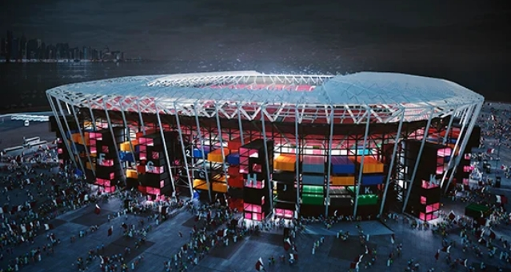

World Cup Stadiums
The 2022 FIFA World Cup will not only be the first tournament to be held in the Arab region, but it will be the most compact, allowing fans to attend more than one game a day.
With high summer temperatures, each stadium, training facility and fan zone is equipped with solar-powered cooling technology to keep the temperature at 27C. All stadiums are eco-friendly and their temperature will be controllable.
Qatar is home for less than 3 million people, so the legacy of the tournament has to be managed carefully. To that end, the tournament organizers have pledged to build stadiums with modular elements, which will be reconfigured after the tournament to provide a lasting legacy for the 2022 FIFA World Cup far beyond Qatar’s borders.
After the tournament, around 170,000 seats will be disassembled and provided to developing nations to help develop their sports infrastructure. As many as 22 new stadiums will be created in emerging economies, and this reconfiguration will leave Qatar with stadiums between 20-25,000 seats, which are suitable for its domestic entertainment needs.
Albayt-Stadium
| Host city: | Al Khor |
|---|---|
| Construction: | Will be ready soon (Host of 2021 FIFA Arab Cup in November 2021). |
| Gross capacity: | 60,000 |
| Matches Planned: | Opening game and all matches through to the semi-finals |
The stadium’s design honors Qatar’s past and present while being a model of green development and sustainability. After the tournament, the upper part of the stadium will be dissembled and the removed seats will be donated to other countries.
This stadium can seat up to 60,000 spectators. It is unique with its giant tent structure covering the whole stadium that is named after bayt al sha’ar – tents historically used by nomadic peoples in Qatar and the Gulf region.
Ahmad Bin Ali Stadium

| Host city: | Al Rayyan |
|---|---|
| Construction: | Ready |
| Gross capacity: | 40,000 |
| Matches Planned: | Group matches, round of 16 |
Located in Al Rayyan just outside of Doha, Al-Rayyan Stadium will expand to hold 40,000 spectators using modular elements forming an upper tier in time for the 2022 FIFA World Cup.
The stadium is reflecting the Qatari culture through its “spectacular undulating façade”. It will be downsized to nearly 20,000 seats after the tournament, and the removed seats will be given to football development projects abroad.
Al Janoub Stadium

| Host city: | Al Wakrah |
|---|---|
| Construction: | Ready |
| Gross capacity: | 40,000 |
| Matches planned: | Group matches, round of 16 |
Located in Al Wakrah, 18 kilometers away from Doha, this stadium has a capacity of 40,000, and is part of a broader sports complex that contains cycling and horse trails, shops, restaurants and sports clubs.
After the FIFA World Cup, the stadium's capacity will be reduced to 20,000 seats, guaranteeing an electric atmosphere for their Qatar Stars League matches.
Al Janoub Stadium

| Host city: | Doha |
|---|---|
| Construction: | Ready |
| Gross capacity: | 40,000 |
| Matches planned: | Group matches, round of 16, and play off for third place game |
The redesigned Khalifa International Stadium was originally built in 1976 and renovated and expanded in 2005 to serve as the centerpiece of the 2006 Asian Games hosted by Qatar.
The stadium, which includes sweeping arcs and partially covered stands, is the centerpiece of Aspire Zone, a sports complex that includes Aspire Academy for Sports Excellence, Hamad Aquatic Centre, ASPETAR Sports Medicine Hospital and many other sporting venues.
Qatar Foundation Stadium
| Host city: | Al Rayyan (Education City) |
|---|---|
| Construction: | Ready |
| Gross capacity: | 40,000 |
| Matches planned: | Group matches, round of 16, and and quarter-finals |
The new Education City Stadium is located in the midst of several world-class university campuses at Qatar’s global center of excellence, Education City.
The stadium can seat up to 40,000 spectators, and it takes the form of a jagged diamond. It is easily accessible for fans by either road or metro. Following the FIFA World Cup, the stadium will retain 25,000 seats for use by university athletic teams.
For decades to come, Qatar Foundation Stadium will be a symbol of innovation, sustainability and progress, in line with Qatar National Vision 2030 and the goals of both Qatar Foundation and the Supreme Committee for Delivery & Legacy.
Lusail Stadium

| Host city: | Al Daayen |
|---|---|
| Construction: | Under Construction |
| Gross capacity: | 80,000 |
| Matches planned: | All matches through to the final match |
Located in the Al-Daayen section of new development Lusail City, the new Lusail Stadium is one of the primary stadiums of Qatar’s World Cup and will host the final ceremony for the 2022 tournament.
Fans will get to games via upgraded roads, the Doha Metro or the Lusail Light Rail Transit system, and they can spend their time across different parks or in the theme park.
Ras Abu Aboud Stadium
| Host city: | Doha |
|---|---|
| Construction: | Under Construction |
| Gross capacity: | 40,000 |
| Matches planned: | Group matches and round of 16 |
Ras Abu Aboud stadium project is a pioneering project in the world of sports stadium construction. Built from shipping containers, this stadium will be completely dismantled and the materials that were used in the construction will be re-utilized.
The stadium is located minutes away from Hamad International Airport and it overlooks the Gulf Coast and the fascinating scene of the West Bay skyscrapers.
Al Janoub Stadium
| Host city: | Doha |
|---|---|
| Construction: | Ready |
| Gross capacity: | 40,000 |
| Matches planned: | Group matches, round of 16, and play off for third place game |
The redesigned Khalifa International Stadium was originally built in 1976 and renovated and expanded in 2005 to serve as the centerpiece of the 2006 Asian Games hosted by Qatar.
The stadium, which includes sweeping arcs and partially covered stands, is the centerpiece of Aspire Zone, a sports complex that includes Aspire Academy for Sports Excellence, Hamad Aquatic Centre, ASPETAR Sports Medicine Hospital and many other sporting venues.
Al Thumama Stadium

| Host city: | Doha |
|---|---|
| Construction: | Under construction |
| Gross capacity: | 40,000 |
| Matches planned: | Group matches, round of 16, and quarter finals |
Al Thumama Stadium is a distinct Arab architectural icon, as it is inspired by the traditional qahfiya (the cap worn under the Ghutra and Egal) in the Arab world. This design was chosen because it is a cultural commonality among Arabs in the Arab world. Therefore, it expresses the Arab civilization's depth and the intertwined cultural-historical legacy of the Arab countries.
The stadium is located in the southern districts of Doha, several minutes away from Hamad International Airport, and has a capacity of at least 40,000 seats that will be reduced after the tournament to 20,000 and donated to developing countries.